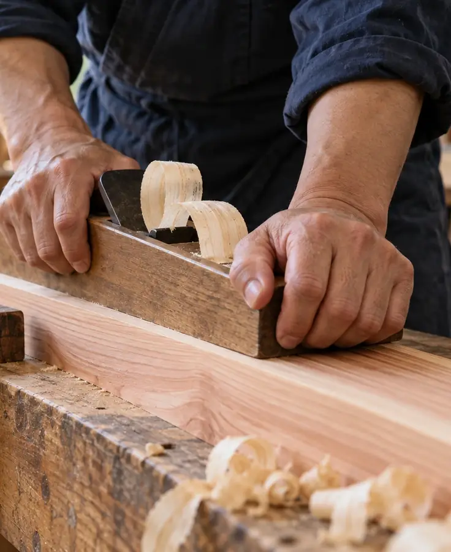

一〜十十の段取り
相談から、点検まで。
- 金額が決まる段取り
- お支払いのある段取り
| 番号 | 段取り | 期間 | 決めること | 用意するもの |
|---|---|---|---|---|
| 一 | 相談 | 約1時間 | 住まいの希望、予算の考え方 | 気になっていることのメモ |
| 二 | 現地調査 | 約2時間 | 立ち会いの日時 | 土地の資料（測量図・公図）、今の家の図面 |
| 三 | プラン | 2〜3回の打ち合わせ | 間取り、窓の位置、設備のグレード | 今の家具の寸法、好きな家の写真 |
| 四 | 見積もり項目ごとに | 約2週間 | 項目ごとに、残すか削るか | ほかの会社の見積もり（比べたい方） |
| 五 | 契約金額が決まる（支払いあり） | 約1時間 | 最終の仕様と金額、工期 | 印鑑、本人確認の書類 |
| 六 | 着工（支払いあり） | 基礎に約1か月 | ご近所へのあいさつの方法 | ― |
| 七 | 上棟柱と梁を組み、棟木を載せる（支払いあり） | 1〜2日 | 上棟の日の立ち会い（任意） | ― |
| 八 | 完成社内と役所の検査 | 約3か月 | 照明やカーテンの最終確認 | 家具の搬入日の予定 |
| 九 | 引き渡し鍵と図面一式（支払いあり） | 約2時間 | 気になる箇所の手直しの有無 | ― |
| 十 | 点検費用はかかりません | 1年・5年・10年目 | 点検の日時 | 気になっている箇所のメモ |

五・六・七・九支払いの時期と割合
金額は契約で決まり、4回に分けて払います。
見積もりの段階では、項目を削ったり足したりできます。契約のあとの変更は、差額を先にお伝えします。
| 時期 | 割合 | 2,800万円のとき | この時点で |
|---|---|---|---|
| 五 契約 | 10% | 280万円 | 見積もりの金額で、工事費が決まります |
| 六 着工 | 30% | 840万円 | 基礎の工事を始めます |
| 七 上棟 | 30% | 840万円 | 骨組みが立ち上がります |
| 九 引き渡し | 30% | 840万円 | 手直しを終え、鍵をお渡しします |
金額は税込です。土地代と諸費用は含まず、それぞれの支払先へ別にお支払いいただきます。工事中は週に一度、その週の内容と写真をお送りし、窓口は同じ現場監督です。